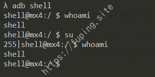
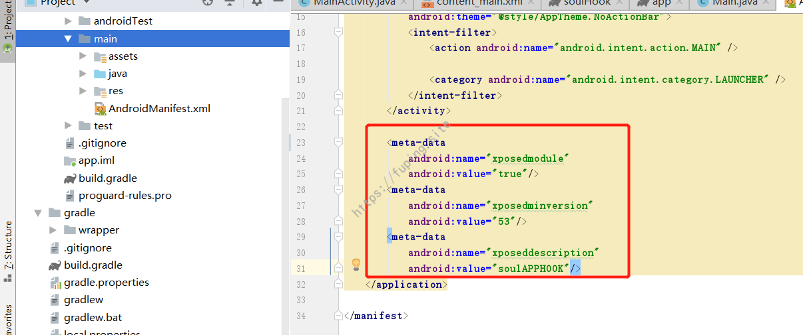
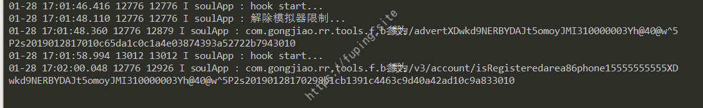

安卓APP测试之HOOK大法-Xposed篇
0x01 前言
安卓APP测试之HOOK大法-Frida篇是基于Frida来实现HOOK，对于部分用户来说，一方面手机ROOT会带来一些风险，另一方面虽然愿意承担风险但是手机无法ROOT。这就需要采用另外一种方法–利用Xposed来进行HOOK。安装VirtualXposed之后，并不需要对手机进行ROOT，也可以来运行Xposed模块进行HOOK。
VirtualXposed是基于VirtualApp 和 epic 在非ROOT环境下运行Xposed模块的实现（支持5.0~9.0)，就像它的介绍那样，Use Xposed with a simple APP, without needing to root, unlock the bootloader, or flash a system image.可以运行Xposed，不需要root，也不需要BL解锁和刷机。
0x02 环境准备
手机还是采用魅族Mx4，关闭ROOT权限。

下载并安装VirtualXposed，下载地址：https://github.com/android-hacker/VirtualXposed/releases
安装：
adb install VirtualXposed_0.16.1.apk
安装VirtualXposed之后，然后把手机上的APP安装到VirtualXposed上。
由于VirtualXposed自带Xposed，这里我们只将需要的APP安装上去即可。
开发Xposed模块采用的是Android Studio。
新建一个APP项目，添加依赖
1 | provided 'de.robv.android.xposed:api:82' |
新建一个Main类，并实现IXposedHookLoadPackage接口。
在src/main下新建一个Assets Folder。

并在其中新建一个名称为xposed_init的文件，内容是实现HOOK的类，这里是com.fuping.soulhook.Main。
在AndroidManifest.xml中指定模块的名称

环境准备好了，下面就是模块的开发和HOOK了。
0x03 利用Xposed进行HOOK
由于上篇文章已经分析过了，这里就不进行分析了，打开app会提示SoulApp 暂不支持模拟器，请稍后再试~。我们需要对cn.soulapp.android.utils.j.e()进行HOOK，令其返回为false。
上面模块的框架已经搭好了，直接写HOOK代码，主要代码如下：
注意，利用Android Studio进行模块的编写时，需要禁用
Instant Run(File -> Settings -> Build, Execution, Deployment -> Instant Run)。
然后打包安装。再利用VirtualXposed将编写的HOOK模块添加到VirtualXposed中。
查看安装的app
然后在VirtualXposed中打开Xposed Installer，在模块中勾选soulHook。
重启VirtualXposed。
Xposed模块每次修改都需要重启手机，在VirtualXposed中时，只需重启VirtualXposed即可，而且速度极快。
在VirtualXposed中打开soulapp，并查看logcat输出内容。
APP可以正常进入，说明HOOK成功。
剩下的也比较简单了，例如查看com.gongjiao.rr.tools.f.b参数。
主要代码：
运行输入手机号查看Log信息：

也是毫无问题可以获取到参数的内容的。
获取到参数内容后，根据上篇文章的算法的分析，就可以自己构造进行加密了。
例如利用Python来实现，可以批量探测用户是否注册。
0x04 总结
本来Frida和Xposed是作为一篇文章的，但是由于篇幅问题分成了两篇。这两篇文章主要通过两种方式来进行HOOK，主要是为了说明HOOK的好处，没有说是为了对比哪个好哪个不好的。不过通过测试，如果安装了VirtualXposed，Xposed应该还是略胜一筹吧。第一点无需ROOT即可运行，第二点是解决了需要重启手机的麻烦（利用VirtualXposed可以秒重启），第三点就是携带方便了。不过各有各的好处，根据自己的习惯选择。也可以先用Frida进行HOOK，毕竟测试比较方便，然后最后移植到Xposed上。